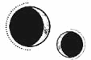

CAPÍTULO 62
Augustus 1787
Descubrir que los inmarcesibles se habían aliado con Hevgoss no fue ninguna sorpresa.
Se enviaron misivas a los países vecinos para animarlos a oponerse y presionar a Hevgoss para que se retractara, pero apenas obtuvieron respuesta por su parte. Incluso Novis tardó en responder mostrando su repulsa sin mucha convicción.
—Centrémonos en la parte positiva. La alianza con Hevgoss demuestra que recurrir a la obsidiana ha funcionado —dijo el general Hutchens dirigiéndose al resto de los miembros de la Llama Eterna con tono despreocupado.
En teoría, Hutchens tenía un historial intachable: había estado al mando de la zona portuaria y habría conseguido defenderla del bombardeo si la falta de recursos no hubiera obligado a la Resistencia a renunciar a ella para evitar poner en riesgo el Cuartel General. Pese a todo, antes de iniciar la retirada, se había asegurado de sabotear los muelles sin apenas causar bajas. Hicieron bien en contar con él, aunque, como buen devoto de Luc, Sol y la Llama Eterna, tenía una fe ciega en que la victoria estaba asegurada.
Tal era su confianza en que Sol proveería que solía pasar por alto el aprovisionamiento o las tareas más rutinarias.
Crowther no podía ni quería confiar en él, por lo que cada vez había una mayor disonancia entre las circunstancias reales de la guerra y la visión que Hutchens y el resto de los miembros del Consejo tenían del conflicto.
—Lo que debemos hacer es acumular más obsidiana y atacarlos sin piedad antes de que lleguen los mercenarios hevgotianos.
A Helena se le revolvió el estómago solo de pensar en producir más obsidiana. Aunque pudiera, ya había alcanzado el límite de muertes que era capaz de presenciar.
—Perdimos más de la mitad de nuestras fuerzas y de nuestro territorio la última vez que intentamos llevar a cabo una ofensiva similar. —Con la inestabilidad que reinaba en el Consejo, Crowther se estaba viendo obligado a intervenir más de lo acostumbrado y, si bien sus observaciones eran acertadas, carecía del carisma necesario para conseguir convencer a los demás de que se pusieran de su lado—. Aunque confío en el efecto de la obsidiana, hay que tener en cuenta que corremos el riesgo de que la llegada de los mercenarios vaya acompañada de un aumento en el uso de anulitio. Hevgoss no dispone de muchos alquimistas y enviarán a sus tropas desde las prisiones.
Hutchens negó con la cabeza.
—No creo que los inmarcesibles vuelvan a recurrir al anulitio, porque no pueden permitirse perder más territorio. Y recordemos que el polvo residual ha afectado también a la isla Oeste.
—Esta vez nos aseguraremos de pulir nuestra estrategia a fondo —intervino Luc. En las últimas reuniones había adoptado un tono distinto al hablar, más grave y autoritario. A no ser que lo sacaran de sus casillas, antes solía mostrarse mucho más inseguro—. Independientemente de cómo hayamos llegado hasta aquí, creo que estaremos todos de acuerdo en que no podemos permitirnos perder más batallas. Los inmarcesibles nunca habían querido contar con soldados vivos hasta ahora, así que yo interpreto este cambio de estrategia como una prueba indiscutible de que estamos haciendo algo bien. Preguntad a cualquiera que haya estado en el frente últimamente. Hemos conseguido derrotar a inmarcesibles vivos, liches, necrómatas y aspirantes por igual. La obsidiana ha cambiado el rumbo de la guerra. Con esta alianza, están admitiendo que no se ven capaces de ganar solos. Coincido con Hutchens: vayamos con todo a por ellos. Los sacaremos de su escondrijo a la fuerza.
—Aunque fuera posible asegurar nuestra victoria de una manera tan decisiva, hay que tener en cuenta que Hevgoss podría intentar salir ganando sin importar qué bando gane —apuntó Crowther—. Quizá haya llegado el momento de negociar con Novis. Por muy reticentes que se hayan mostrado en estos últimos meses, no creo que a la reina le haga ninguna gracia que Hevgoss se quede con los recursos de Paladia. Con el incentivo adecuado, es posible que vuelva a apoyarnos. Tal vez convenga que el principado les haga una visita diplomática para mostrar nuestro respeto y…
—No pienso salir de Paladia —lo interrumpió Luc sin molestarse en disimular el desprecio que Crowther despertaba en él—. ¿Cómo se supone que voy a inspirar confianza a nuestras tropas si me embarco en una misión diplomática mientras se rumorea que Hevgoss va a apoyar a los inmarcesibles?
Crowther frunció el ceño.
—La negociación sería mucho más efectiva si acudís vos en persona. Ningún recurso o representante que pudiéramos permitirnos enviar a la corte de Novis se entendería como una muestra de respeto tan grande como vuestra presencia, principado. Cualquier otro delegado no…
—No es negociable. Si quieres enviar a alguien a Novis, me parece bien, pero yo no pienso irme de aquí —sentenció Luc con una rabiosa vehemencia.
Helena ya sabía que Crowther tenía intención de presentar aquella propuesta. Había considerado utilizar el embarazo de Lila para coaccionar a Luc y obligarlo a desplazarse hasta Novis con la intención de escoltar a la joven y a su «heredero» a un lugar seguro. Sin embargo, Lila se había negado en redondo a hacer público su embarazo, así que sacarlo a la luz en aquella reunión habría sido una jugada demasiado arriesgada.
Al final, fue Matias quien viajó al reino vecino con un cofre de oro transmutado por Luc. Nadie quedó satisfecho con la decisión, pero, cuando Helena lo vio partir ceremoniosamente hacia Novis, notó que el nudo que llevaba años oprimiéndole el pecho desaparecía.
Apenas había cruzado la frontera cuando la Resistencia se dispuso a prepararse para la batalla.
Era una misión suicida. Aunque no quedaban soldados ni recursos suficientes para afrontar la situación, los exploradores salieron a recorrer las ruinas de la ciudad para intentar recuperar todas las armas y armaduras que pudieran encontrar. También les prohibieron estrictamente traer cadáveres de vuelta al Cuartel General. Quienes murieran en la zona afectada tendrían que permanecer allí hasta que encontraran una forma segura de llevar a cabo una ceremonia fúnebre.
Cualquiera dispuesto a luchar era bienvenido a unirse a las filas de la Resistencia, independientemente de su edad, de su género o de que tuviera poderes alquímicos. Pero no había tiempo para entrenar a nadie. Ni siquiera tenían armas que ofrecer. Allí donde Helena mirara, había niños y niñas practicando con palos o intentando fabricar tirachinas caseros. Y ninguno llevaba armadura, pues no había de su tamaño.
A Helena se le revolvía el estómago.
Eran carne de cañón. Morirían a los pocos minutos de pisar el campo de batalla.
Pero la Resistencia prefería recurrir a ellos que a la nigromancia. Aquel ataque abocado al fracaso dependía de un milagro, de la seguridad de que se verían recompensados por arriesgar todo cuanto tenían. Porque la gloria, la bendición y la eternidad aguardaba a quienes no perdían la fe.
Igual que Orion había recibido la bendición de Sol.
Pero ya no contaban con Ilva para obrar milagros.
—Quiero fabricar una bomba —dijo Helena nada más entrar en el despacho de Crowther.
Había ido a hablar con él en mitad de la noche, pero lo encontró despierto, siempre lo estaba. Su rostro, ya de por sí delgado, cada vez estaba más demacrado. Aunque ni siquiera había cumplido los cincuenta, parecía tener ochenta años.
—No me habías dicho que también eras experta en explosivos —comentó con desdén.
Helena se sentó sin esperar a que le ofreciera asiento, y Crowther suspiró.
Durante un tiempo, ella había pensado que nadie ponía tan a prueba el límite de sus conflictos internos como Kaine, pero lo de Crowther estaba a otro nivel. Jamás había odiado y necesitado a alguien tanto como a él.
Crowther podía permitirle a Helena hacer algo de utilidad, puesto que era el único miembro de la Llama Eterna que se tomaba la molestia de escucharla. El problema era que usaba su obediencia como un arma contra Kaine.
La caza de espías entre los inmarcesibles se había intensificado. El resto de sus informadores habían desaparecido sin dejar rastro, así que recurrir a Kaine o incluso a la información que les proporcionaba suponía correr un riesgo demasiado alto.
—Solía ayudar a Luc a practicar los fundamentos de la piromancia. Además, estoy familiarizada con los procesos técnicos de la combustión, y sus reglas son las mismas con o sin resonancia.
Crowther arqueó una ceja y movió los dedos de la mano derecha para que los anillos de ignición se rozaran unos con otros.
—He estado pensando en ello desde hace tiempo… —Estaba tan nerviosa que incluso le dolía la garganta—. Podríamos utilizar la obsidiana igual que los inmarcesibles usaron el anulitio en su bomba. De hecho, también podríamos combinar ambos materiales.
—¿Y no se fundiría la obsidiana en la explosión?
—No. Shiseo tiene experiencia con la pirotecnia que se utiliza para las celebraciones orientales. Entre los dos sumamos un conocimiento bastante extenso. Si lo hacemos bien, podríamos limitar el calor desprendido por la bomba sin comprometer su fuerza explosiva. No tendría el alcance de su ataque, pero daría igual.
—Confías mucho en tu trabajo para no disponer más que de un certificado básico en alquimia.
Helena apretó los dientes, pero siguió hablando:
—Tenemos una buena cantidad de fragmentos de obsidiana. Durante el proceso de fabricación de las armas, se generan esquirlas y pedacitos demasiado delgados o pequeños como para servir de utilidad. Esos residuos bastarían para la bomba, así que ni siquiera interferiríamos en la producción. —Sacó un montón de papeles doblados—. Lo único que necesitaríamos sería que nos prepararan estos componentes en el Horno de Athanor.
Crowther les echó un vistazo a sus diseños.
—No te prometo nada, pero… —suspiró— supongo que nos vendrá bien.
Pensar en lo que estaba por venir la aterrorizaba y desesperaba a partes iguales. Si la ofensiva salía bien y la bomba debilitaba lo suficiente a Morrough, ¿podría Luc acabar con él?
¿Y qué pasaría con Kaine si lograban derrotarlo?
Cada vez que cerraba los ojos, caía presa de las pesadillas. Soñaba que hurgaba en el cadáver de Morrough a oscuras, con las manos desnudas, y que se manchaba los brazos enteros de sangre buscando desesperada el hueso que albergaba la vida de Kaine. Mientras le arrancaba uno a uno todos los huesos del cuerpo, Luc se acercaba a ella como un sol naciente. Al verlo, ella trataba de explicarse y le suplicaba que la entendiera, pero él nunca la escuchaba. El sueño siempre terminaba con ella envuelta en llamas.
Al despertar, sabía que la realidad sería muy distinta. Cuando Morrough fuera derrotado, ella estaría en el Cuartel General, trabajando en el hospital. No se enteraría de nada hasta que ya fuera demasiado tarde.
Y cada día se preguntaba si su esfuerzo acabaría con su propia perdición o con la destrucción de Kaine.
Después de lo mal que él había reaccionado cuando Helena le contó que había empezado a involucrarse más activamente en la guerra, había decidido no contarle lo de la bomba. Tampoco le costó ocultárselo: su papel como embajador lo mantenía tan ocupado que apenas encontraban tiempo para verse aparte de para intercambiar la información más urgente.
No subió al tejado para llamarlo hasta que Shiseo y ella no tuvieron listos todos los componentes de su proyecto. Tardó un buen rato en aparecer y, cuando lo hizo, iba vestido con un traje formal, sobrio e impecable.
—No voy a poder quedarme mucho rato. ¿Qué sucede?
—Tenemos una nueva arma —se apresuró a decir ella—. ¿Sabes si habrá algún momento en que una gran cantidad de inmarcesibles se reunirán cerca? Lo ideal sería un evento en el que tú no tengas que estar presente. Podríamos colocarla hasta con dos días de antelación.
La expresión de Kaine se endureció.
—¿Habéis fabricado una bomba? —Ante el asentimiento de Helena, preguntó—: ¿De obsidiana?
—Y anulitio, así que tendrás que estar bien lejos de allí.
Kaine asintió y le dedicó una mirada cargada de significado.
—Espero que no la guardéis cerca del Cuartel General.
Ella negó con la cabeza.
—No, está en otro sitio.
—Bueno —exhaló—, al menos la Resistencia se está tomando su última ofensiva en serio. Las fuerzas hevgotianas cruzarán la frontera oeste esta semana, pero unos cuantos estratócratas y oficiales vendrán a Paladia en un día. Se va a celebrar un banquete en su honor la noche siguiente de su llegada. La mayor parte de los inmarcesibles asistirán e incluso puede que Morrough se deje caer por allí.
Helena asintió. Tal vez funcionara.
—¿Podrías colocar la bomba sin levantar sospechas y luego marcharte de allí?
La mirada de Kaine se suavizó.
—Nadie les presta tanta atención como debería a los necrómatas. Dan por hecho que quienes los dirigen están de su lado. Si le arranco la vitalidad al necrómata de otro inmarcesible, puedo dirigirlo para que la coloque y nadie vinculará el ataque conmigo.
—¿Estás seguro de que te dará tiempo a marcharte de allí antes de que explote?
Le daba miedo que estuviera evadiendo la pregunta.
Kaine y ella parecían pertenecer a dos mundos completamente distintos. Él iba vestido con un uniforme hecho a medida limpio y decorado con una hilera de intrincadas medallas, mientras que ella llevaba ropas reglamentarias andrajosas y demasiado grandes.
—¿Cuánto tendré que alejarme?
—Lo suficiente como para que no respires el humo. Habrá micropartículas en el aire y no sabemos qué efecto tendrán. Lo mejor será que estés a la mayor distancia que puedas.
—Me aseguraré de hacer un recado llegado el momento. Al embajador le gusta ser un incordio, así que estoy seguro de que podré convencerlo de pedirme algo absurdo y difícil de conseguir.
Helena asintió.
—Pues que sea un recado largo. Te traeré la bomba mañana.
—No. —La voz de Kaine restalló como un látigo, carente de la dulzura que había destilado hacía un momento—. No toleraré que Crowther te utilice para transportar una bomba.
Helena negó con la cabeza.
—Mientras los componentes no se junten, no se activará. Además, le hemos puesto un temporizador. No me va a explotar en las manos —lo tranquilizó—. No serás capaz de ensamblarla si no te enseño a hacerlo.
—Me da igual. Dile a Crowther que busque otra manera de traerla.
Se había quedado blanco como el papel y su piel empezaba a emitir ese característico brillo inhumano.
—Pero, si no la traigo yo, no volveré a verte hasta… hasta después de la explosión —dijo, dispuesta a recurrir al juego sucio con tal de hacerlo cooperar.
Kaine no cedió.
—Pues nos veremos después. Que se encargue otra persona.
A Helena se le entrecortó la respiración.
—Kaine…
—Recuerda cómo te encontré tras el otro bombardeo —dijo fulminándola con la mirada—. Tuve que ver cómo te abrían en canal para sacarte la metralla. Perdí la cuenta de las veces que estuviste a punto de morir en aquella mesa de operaciones. De haber estado un centímetro más cerca, la metralla te habría atravesado el corazón. Si quieres que coloque una bomba, lo haré encantado, pero no permitiré que te acerques a ella lo más mínimo. ¿Ha quedado claro?
Helena tragó saliva con amargura, agradecida por haberle contado lo justo y no haber mencionado que había sido ella quien la había fabricado.
—Está bien. Como tú quieras.
Se dio la vuelta para marcharse. Todavía tenía muchas tareas pendientes: hacer el inventario, terminar la bomba, ayudar a preparar el hospital. Por si fuera poco, habían vuelto a asignarle un turno en el servicio de urgencias.
Kaine tiró de ella para detenerla.
—Nos vemos aquí en unas horas.
—No creo que sea buen momento —le recordó negando con la cabeza.
Parecía haber olvidado que era él quien tenía prisa, porque se negó a soltarla. Helena deseó que su relación hubiera florecido mucho antes, pues habían perdido un tiempo precioso.
—Está bien —cedió al final—, pero ahora tienes que irte.
Kaine la soltó despacio.
—Te llamaré.
Después de informar a Crowther, Helena regresó al laboratorio externo, donde Shiseo y ella combinaron su resonancia para ensamblar las últimas piezas de la bomba. Se habían asegurado de que fuera lo más compacta posible, pero seguía ocupando casi tanto como el tamaño de un niño pequeño, así que tendrían que colocarla en el centro de una habitación.
Aunque las bombas no eran un invento alquímico como tal, llevaban casi un siglo prohibidas por considerarse armas poco elegantes. Pese a todo, eso no había frenado su desarrollo. De hecho, era bien sabido que Hevgoss sentía predilección por aquel tipo de tecnología, pues consideraba que los ponía en igualdad de condiciones con los alquimistas.
Con la correcta manipulación del aire y las llamas, Luc era capaz de crear bombas incendiarias. Gran parte de sus deberes se centraban en los sellos y los estudios técnicos que diseccionaban las distintas formas de manipular el fuego y convertirlo en un arma. Helena había utilizado muchos de esos conocimientos en la bomba.
La clave había sido diseñar un mecanismo que causara una explosión lo más violenta posible sin llegar a fundir la obsidiana.
Shiseo le había enseñado a fusionar aleaciones para combinarlas mediante un sello transmutacional doble. Era una técnica complicada y peligrosa, e, incluso con todos los sellos que habían dibujado para estabilizar su resonancia, Helena se había abrasado varios dedos casi hasta el hueso.
—¿Estás bien? —le preguntó Shiseo cuando se sentó para regenerarse lo más rápido posible.
Le dolían tanto las manos que casi no sentía la resonancia, pero los años de práctica habían conseguido que curar las terminaciones nerviosas le resultara tan fácil como respirar. Más adelante se regeneraría la dermis para que las cicatrices no fueran tan visibles.
—No ha sido nada —consiguió decir, parpadeando furiosa, mientras contemplaba las líneas que le surcaban los dedos y la palma de la mano.
Se tocó el esternón por la costumbre, buscando la suave hendidura en el hueso. La cicatriz ya no se le notaba tanto, pero el punto donde el hueso se había fracturado todavía le dolía.
—¿Está hecho?
Shiseo dejó dos piezas sobre la mesa y Helena las contempló agotada.
—Terminaremos mañana —le dijo el hombre sin apartar la vista de ella—. Tienes que curarte las manos y descansar un poco.
Ella le ofreció una leve sonrisa.
—Ya descansaré esta noche.
Se mantuvo ocupada revisando el inventario médico hasta última hora de la noche. Alguien casi había dejado sin existencias las inyecciones de epinefrina, pero quienquiera que se las hubiera llevado no lo había hecho de manera oficial. Helena garabateó una nota cortante. Si Elain iba a tomar las riendas, al menos podía asegurarse de que se cumplieran las normas.
Estaba colocando una pila de vendas esterilizadas cuando el anillo se calentó.
Amaris apenas tuvo tiempo de aterrizar cuando Kaine levantó a Helena en volandas y alzaron el vuelo una vez más. En cuanto estuvieron a resguardo, él la pegó contra la pared y la besó con un hambre feroz.
Helena se aferró a él con fuerza y, aunque se le durmieron los dedos, casi ni lo notó.
Kaine le acunó el rostro entre ambas manos. Apoyó la frente en la suya dejando que sus alientos se entremezclaran antes de besarla de nuevo y guiarla por la casa con paso apresurado. Siempre iban contra reloj.
«Algún día —se prometió—, algún día le daré todo mi amor en un instante que no sea robado».
—¿Te encuentras bien? —le preguntó Kaine una vez que llegaron a una estancia lo bastante iluminada como para distinguir sus facciones.
Extendió una mano y Helena cayó en la cuenta de que, si la tocaba, usaría su resonancia y se daría cuenta de que se había hecho daño hacía poco tiempo, así que se le adelantó. Le estrechó una mano, le cerró los dedos y se la llevó contra el pecho.
—Sí —asintió—. Ahora ya estoy bien.
Kaine la miró. Helena sabía que estaba agotada, que había perdido peso y que estaba pálida por la falta de exposición a la luz natural. El bombardeo había destrozado la mayor parte de las ventanas del Cuartel General, pero habían tapiado incluso las que habían quedado intactas por miedo a que el aire arrastrara el anulitio y se colara en el edificio.
—Debería haberte llamado antes —dijo Kaine mientras le acariciaba la mejilla con el pulgar.
—No habría merecido la pena —replicó ella negando con la cabeza—. No deberías volar tan bajo. Es peligroso y alguien podría dispararte con obsidiana. —Un escalofrío le recorrió el cuerpo con tan solo imaginarlo—. No deberíamos estar haciendo esto. Somos unos necios por correr riesgos.
De pronto le costaba respirar. Kaine desenredó los dedos que tenían entrelazados y acunó el rostro de Helena entre sus manos, como si quisiera acallar sus pensamientos.
—Aquí estamos a salvo.
De momento. Durante un rato.
Pero no duraría. No para siempre.
De todas formas, asintió y se obligó a creerlo. No quería echar a perder el poco tiempo que les quedaba. Se puso de puntillas, lo besó y tiró de sus brazos para que la rodeara con ellos.
«Por favor, que esta no sea nuestra última vez».
No cerró los ojos. Observó todos los movimientos de Kaine en un intento por recordar cada segundo juntos. Quería grabarse a fuego en la memoria la sensación de su cuerpo en las manos, contra la piel, como si pudiera hacer de su secreto algo lo bastante real como para perdurar en el tiempo. Como si pudiese dejarlo escrito en el tejido del universo, de manera que la guerra no lograra borrarlo.
Más tarde, Kaine la estrechó contra su pecho y apoyó la barbilla sobre su cabeza mientras trazaba dibujos en su piel con los dedos.
«Voy a cuidar de ti. Nunca dejaré de hacerlo».
No lo dijo en voz alta, pero Helena percibió sus palabras como un cambio en el aire, y notó que su mandíbula se movía al articular los sonidos.
Había tenido la esperanza de poder dormir, de pasar una última hora en paz, pero estaba demasiado asustada. Cuando se incorporó, los ojos grises como el mercurio de Kaine mostraban una expresión cauta. Helena permaneció en silencio durante un momento, sosteniendo una de sus manos entre las suyas y admirando su rostro, pues esa versión de él era suya y solo suya.
Entrelazó los dedos con los de él mientras intentaba encontrar las palabras adecuadas.
—Existe la posibilidad… —empezó por fin—. Tenemos la esperanza de que esta ofensiva ponga fin a la guerra. No estamos seguros… No sabemos cuánto tiempo más aguantaremos si no sale como esperamos.
Notó que la mano de Kaine se crispaba entre las suyas.
—Si la guerra no termina… —A Helena se le estremeció el pecho y dejó escapar una carcajada estrangulada, al borde del sollozo—, pues imagino que seguiremos luchando. Pero, si ganamos…, n-no sé qué ocurrirá contigo. Lo siento. He intentado encontrar una manera… —Bajó la vista—. No he conseguido…
—No pasa nada.
Ella negó con la cabeza.
—A lo mejor recuperas tu alma si matamos a Morrough. No hay por qué dar por hecho lo contrario. Siempre hay una posibilidad. Quizá la Gema de los Cielos baste para…
Estaba dando palos de ciego y ambos lo sabían.
—Podría bastar —insistió estrechándole la mano—. Lo que intento decir es que, si todo sale bien cuando esto acabe, tienes que escapar, ¿vale? Huye tan rápido como puedas y no dejes que te capturen.
—¿Y qué pasará contigo? —preguntó él mirándola con suspicacia.
Helena bajó la vista y jugueteó con el anillo de Kaine. Hacía mucho tiempo que no veía el que ella llevaba.
—Ya me conoces. Estaré en el hospital. Habrá muchos heridos, así que no podré marcharme enseguida… Tú asegúrate de escapar y yo ya te alcanzaré.
Kaine resopló.
—Si sobrevivo, no pienso ir a ningún lado sin ti.
Helena le puso los dedos en los labios para hacerlo callar.
—No, no puedes arriesgarte a que te atrapen.
Él la apartó, pero Helena no iba a permitir que la interrumpiera. Llevaba días dándole vueltas al asunto y creía que era muy poco probable que Crowther fuera a dejarla ir sin que pagara por haber usado la nigromancia. Con un poco de suerte, se limitarían a expulsarla de la Llama Eterna. Pero, incluso a pesar de ser la decisión más rápida y discreta, podría llevarles semanas o meses.
—Ve al Sur, en dirección al mar. Yo me reuniré contigo en cuanto pueda. Te buscaré y haremos lo que siempre hemos dicho: desapareceremos.
Kaine entornó los ojos todavía más.
—¿Y cuánto tiempo crees que tendré que esperarte?
—No lo sé —admitió Helena bajando la mirada—. Puede que… tarde un poco.
—¿Por qué?
—Porque… habrá mucho que hacer cuando la guerra acabe. Aun así, estoy segura de que preferirán que desaparezca cuando ya no me necesiten, así que iré a buscarte, ¿vale? Creo que hacerlo así será lo mejor para ti. A lo mejor descubres que quieres otra cosa cuando tengas la verdadera posibilidad de elegir…
Kaine la agarró por la nuca y tiró de ella hasta que sus rostros estuvieron a punto de tocarse.
—Eres mía —dijo casi contra sus labios—. Mía. Me lo has prometido. La Resistencia te vendió a mí. No pienso ir a ningún lado sin ti. Mataré a quien se atreva a tocarte, ya sea inmortal o no.
No esperó a que respondiera y la besó como si la estuviera marcando con un hierro al rojo vivo.
Shiseo era la única persona aparte de ella que podía encargarse de entregar la bomba. Helena y él habían cubierto el exterior del artefacto con una delgada capa del mo’lian’shi que Shiseo había extraído del polvo de anulitio y con otra del elixir de distorsión que Helena había preparado. Shiseo había conseguido alterar su composición para hacer que funcionara en superficies más amplias. Una vez que la bomba estuviera lista, sería difícil de detectar. Además, su inercia exterior la volvería invisible a la resonancia.
Cuando terminaron, Helena se quitó su anillo y lo estudió con detenimiento. La distorsión ya no era tan efectiva como al principio. Si la arrestaban, la registrarían y le quitarían cualquier metal que llevara encima. Y eso incluía el anillo de Kaine.
—¿Crees que el mo’lian’shi interferiría con un enlace espejo? —preguntó.
Shiseo contempló la joya apenas visible.
—Si dejas una pequeña zona sin cubrir, lo más seguro es que puedas seguir usándolo. —La miró con expresión comprensiva—. Salvo que te vieras sometida a un registro exhaustivo, eso lo mantendría oculto en caso de que alguien utilice la resonancia contigo.
No necesitaba saber más. Murmuró una disculpa en silencio, pensando en la quemazón que Kaine estaba a punto de sentir y cubrió casi toda la superficie del anillo con mo’lian’shi. Al cabo de un rato, cuando se hubo enfriado, bañó la joya de nuevo con el elixir de distorsión para asegurarse de que quedaba bien escondida y la vio desaparecer.
Mientras Shiseo entregaba la bomba, Helena fue a comprobar cómo estaba Lila. Si el hospital acababa saturado de heridos, no sabía cuándo tendría la oportunidad de verla otra vez.
El bulto que crecía en su vientre ya era imposible de disimular, y Lila, consumida por las dudas, empezaba a preguntarse si había tomado la decisión correcta. Se había mordido las uñas hasta la raíz.
—No me puedo creer que esta sea ya la batalla final —dijo mientras veía a los soldados moverse de un lado a otro por la ventana—. Debería estar ahí con ellos.
—No era algo que hubieras podido prever —le respondió Helena, agotada.
Ya era demasiado tarde para que Lila cambiara de opinión.
—¿Crees que ha llegado el momento? ¿Tenemos opciones de ganar?
—Tantas como la situación lo permite.
Helena estaba aterrorizada, pero, independientemente de que ganaran o perdieran, la guerra tenía que acabar ya. No podían seguir así para siempre.
—Está despierto —dijo Lila, que extendió una mano hacia Helena—. Ven a notar cómo se mueve. Justo aquí.
Lila cogió la mano de Helena y la puso sobre su vientre, por encima del hueso de la cadera. Al cabo de un instante, Helena notó una extraña agitación sin necesidad de recurrir a la resonancia.
—¿Lo has notado? —preguntó Lila.
Helena asintió y recurrió a su don para colarse en su cuerpo y encontrar el latido del bebé, tan rápido como el aleteo de un pajarillo.
Pero ya no dio ninguna patada más.
—Seguro que ya ha vuelto a cerrar los ojos, el muy dormilón —dijo Lila. Helena no sabía por qué estaba tan segura de que el bebé era un niño, pero ya lo llamaba Apollo o, simplemente, Pol, de manera cariñosa—. Deberías ver lo mucho que se mueve por las noches. Yo creo que se pasa las horas dando volteretas, porque te juro que lo noto clavarme los pies en las costillas.
—Vaya, me pregunto de quién habrá heredado los genes de atleta problemático —comentó Helena con aspereza al apartar la mano del vientre de su amiga.
—Podrá disfrutar de todos los buenos momentos que nosotros tuvimos que perdernos. —Lila se bajó la camisa—. Me alegro de que vaya a vivir una infancia en paz, ¿sabes? Estoy segura de que nacerán muchos niños en los próximos años y todos estudiarán juntos en la Academia, igual que nosotros. ¿Te ves teniendo hijos en el futuro?
Helena negó con la cabeza sin decir nada.
—A lo mejor cambias de idea algún día —insistió como si tratara de convencerla—. Solo tienes que encontrar al hombre adecuado. Estoy segura de que serías una madre fantástica.
—Soy sanadora. Ese camino no es para nosotras.
—Pero fue la guerra lo que te obligó a convertirte en sanadora. Nadie espera que sigas ejerciendo cuando todo haya terminado.
Para ser alguien tan consciente de lo excepcional y peligroso que era el cargo que ocupaba, Lila no parecía darse cuenta de que las oportunidades de las que ella había disfrutado, ya fuera por la familia en la que había nacido o por sus propias habilidades, no estaban al alcance de la mayoría. Lila poseía un talento único, una belleza que no se quedaba atrás y un apellido que arrastraba siglos de historia. Ella tenía el privilegio de poder saltarse las normas sin que hubiera consecuencias, pero el resto del mundo no tenía esa suerte. Y mucho menos Helena.
Decidió cambiar de tema:
—Creo que deberías decírselo a Luc. Merece saberlo antes de la batalla. Además, si la cosa se tuerce, la Llama Eterna sabrá que tiene que priorizar tu seguridad.
Para sorpresa de Helena, Lila guardó silencio durante un buen rato.
—Ya lo sabe —admitió en un susurro, sin atreverse a encontrar la mirada de Helena.
—¿Perdón?
—Se coló por la ventana cuando me pusieron en cuarentena y lo vi tan preocupado que tuve que contarle la verdad. Él me dijo que me obligarían a marcharme si alguien se enteraba, que me enviarían a Novis. He insistido en mantenerlo en secreto porque Luc me necesita. Me hizo prometer que no se lo contaría a nadie.
Helena se quedó muda de asombro.
—¿Lo ha sabido desde el principio? ¿Y cómo es que no se ha quejado de que me haya estado encargando yo de tus cuidados si sabía lo del embarazo?
Si Luc había permitido aquello, ¿por qué se había mostrado tan inflexible con lo de Titus? No tenía sentido.
Lila se puso colorada.
—Lo siento. Quería decírtelo, pero sabía que Luc se enfadaría. Todavía no se encuentra muy bien.
—Tengo que irme —dijo Helena poniéndose de pie con torpeza.
Lila se adelantó para intentar detenerla, colocándose delante de la puerta.
—No, está claro que te ha molestado. Por favor, déjame que te lo explique.
Helena la miró. Lila se parecía tanto a su padre que era como una versión femenina de él: igual estatura, el cabello rubio, los ojos azules…, e incluso compartían una cicatriz en el lateral del rostro.
—No eres tú quien debe darme explicaciones. Voy a hablar con Luc.
Lo buscó por todas partes, pero cada vez que preguntaba por él le daban una respuesta distinta: estaba en una reunión, descansando, en el patio, en la sala común… Siempre parecía sacarle un par de minutos de ventaja.
Al final, logró rastrearlo hasta el hospital, pero estaba en una habitación privada y vigilada, sin acceso para visitas.
Helena lo esperó hasta que vio a Elain salir con una bandeja llena de jeringuillas y frasquitos vacíos. Tenía el ceño fruncido en una expresión tensa.
—Necesito ver a Luc —le dijo.
—Está descansando —respondió Elain con un sobresalto al verla.
Helena inspeccionó el contenido de la bandeja, aunque Elain trató de ocultárselo.
—¿Por qué le estás dando todo eso? —le preguntó mientras examinaba cada frasquito—. No deberías mezclar esos medicamentos. Además, Luc es demasiado joven para necesitar muchos de ellos. Y… —cogió una jeringuilla cuya etiqueta estaba escrita con su propia caligrafía—, esto es solo para casos de extrema urgencia. Si se abusa de ello, puede causar una insuficiencia cardiaca. ¿Quién ha aprobado este tratamiento?
Un destello de indignación surcó la mirada de Elain.
—Yo soy su sanadora.